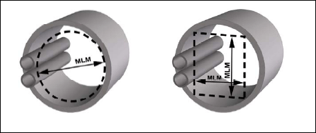

(1) Verkehrswege auf Baustellen sind z. B. Zugänge zu Arbeitsplätzen, zu Sanitärräumen, zu Unterkünften oder zu Pausen- und Bereitschaftsräumen. Dazu gehören insbesondere Laufstege, Treppen, Flure, Gänge, Laderampen, ortsfeste Steigleitern und Steigeisengänge sowie Fluchtwege.
Hinweis:
Nicht ortsfeste Leitern sind keine Verkehrswege im Sinne der ASR A1.8. Der Einsatz von Leitern als Zugang zu/Abgang von Arbeitsplätzen wird in der TRBS 2121 Teil 2 betrachtet.
(2) Verkehrswege auf Baustellen müssen zeitlich, räumlich und tätigkeitsbezogen festgelegt werden. Im Zuge des Baufortschritts verändern sich häufig die Anordnung sowie die Größe bzw. die Abmessungen von Arbeitsplätzen und Verkehrswegen. Ein Teilbereich einer Baustelle kann im Zuge des Baufortschritts tätigkeitsbezogen wechselnd als Arbeitsplatz oder Verkehrsweg festgelegt werden. Bei der gleichzeitigen Ausführung abgrenzbarer Arbeitsschritte kann ein Teilbereich einer Baustelle für Beschäftigte als Arbeitsplatz und für andere Beschäftigte als Verkehrsweg festgelegt sein.
(3) Muss ein Teilbereich eines Arbeitsplatzes zugleich als Verkehrsweg von anderen Beschäftigten desselben Arbeitgebers genutzt werden, so hat dieser Arbeitgeber diesen Verkehrsweg zuvor festzulegen und einzurichten.
(4) Muss ein Teilbereich eines Arbeitsplatzes zugleich Beschäftigten anderer Arbeitgeber als Verkehrsweg dienen, müssen sich die betroffenen Arbeitgeber hinsichtlich der Festlegung und Einrichtung der Verkehrswege abstimmen (§ 8 Arbeitsschutzgesetz (ArbSchG), § 6 DGUV Vorschrift 1).
Hinweis:
Bei der Festlegung und Einrichtung von Verkehrswegen auf Baustellen sind ggf. die Hinweise des Koordinators nach Baustellenverordnung (BaustellV) sowie der Sicherheits- und Gesundheitsschutzplan (SiGePlan) zu berücksichtigen.
(5) Wird ein als Verkehrsweg festgelegter Bereich von anderen Beschäftigten im Rahmen ihres Arbeitsauftrages als Arbeitsplatz genutzt, bleiben die Anforderungen an den Verkehrsweg davon unberührt. Der Arbeitgeber hat dafür zu sorgen, dass sich die Beschäftigten in diesem gemeinsam genutzten Bereich nicht gegenseitig gefährden.
(1) Zwischen Verkehrswegen auf Baustellen und Böschungskanten bzw. Verbaukanten sind Sicherheitsabstände (gemäß DIN 4124:2012:01 "Baugruben und Gräben") für die Standsicherheit einzuhalten.
Besteht die Gefahr des Abkommens von Fahrzeugen oder mobilen Arbeitsmitteln in Richtung der Baugrube oder des Grabens, sind gegebenenfalls weitere Maßnahmen erforderlich (z. B. transportable Schutzeinrichtungen wie Anprallschutz,Rammschutz, Leitplanken).
Für Verkehrswege in diesen Bereichen sind gegebenenfalls Maßnahmen gegen Absturz gemäß ASR A2.1 "Schutz vor Absturz und herabfallenden Gegenständen, Betreten von Gefahrenbereichen" vorzusehen.
(2) Laufstege bei Bauarbeiten müssen mindestens 0,5 m breit sein und dürfen nur bis zu einer Neigung von 1:1,75 (etwa 30°) verwendet werden. Sie müssen Trittleisten haben, wenn sie steiler als 1:5 (etwa 11°) sind.
(3) Abweichend von Abschnitt 4.1 Absatz 5 dürfen Abdeckungen von Öffnungen in Verkehrswegen auf Baustellen höchstens 5 cm über die umgebende Oberfläche hinausragen.
(4) Abweichend von Abschnitt 4.2, Tabelle 2 beträgt die Mindestbreite der Verkehrswege auf Baustellen 0,60 m. In Abhängigkeit der Nutzung (z. B. Anzahl der Personen, Art der Transportvorgänge) sind die Breiten der Verkehrswege anzupassen. Für Verkehrswege zu besonderen Arbeitsplätzen in Tunneln, Stollen und Durchpressungen gelten die Mindestabmessungen aus Tabelle 5 und Abbildung 6. Auf die Regelungen der ASR A2.1 "Schutz vor Absturz und herabfallenden Gegenständen, Betreten von Gefahrenbereichen" wird verwiesen. Auf die Regelungen der ASR A5.2 "Anforderungen an Arbeitsplätze und Verkehrswege auf Baustellen im Grenzbereich zum Straßenverkehr - Straßenbaustellen" wird verwiesen.
Tab. 5: Mindestbreite von Verkehrswegen zu besonderen Arbeitsplätzen in Tunneln, Stollen und Durchpressungen
| Länge [m] von Tunneln, Stollen und Durchpressungen | Mindestlichtmaß (MLM) [m] | ||
| Kreisquerschnitt | Rechteckquerschnitt | ||
| Durchmesser | Höhe | Breite | |
| < 50 | 0,80 | 0,80 | 0,60 |
| 50 - < 100 | 1,00 | 1,00 | 0,60 |
| ≥ 100 | 1,20 | 1,20 | 0,60 |
| Steigschächte müssen einen freien Querschnitt von mindestens 0,70 m x 0,70 m haben. | |||

Abb. 6: Mindestlichtmaß (MLM) von Verkehrswegen in Tunneln, Stollen und Durchpressungen
(5) Abweichend von Abschnitt 4.2 Absatz 7 darf auf Baustellen die lichte Mindesthöhe über Verkehrswegen von 2,00 m unterschritten werden, wenn diese aus baulichen Gegebenheiten nicht eingehalten werden kann.
(6) Abweichend von Abschnitt 4.3 Absatz 3 muss bei kombiniertem Fußgänger- und Fahrzeugbetrieb bei Bauarbeiten im Tunnel ein Gehweg mit einem freien Mindestquerschnitt von 1,00 m Breite und 2,00 m Höhe vorhanden sein. Kann dieser Querschnitt aus bautechnischen Gründen nicht eingehalten werden, müssen - ausgenommen bei Förderung mit Stetigförderern - in Abständen von höchstens 50 m auffällig gekennzeichnete und beleuchtete Schutznischen von mindestens 1,00 m Tiefe, 1,00 m Länge und 2,00 m Höhe vorhanden sein und ständig freigehalten werden. Lässt sich bei Gleis- oder Stetigfördererbetrieb der Mindestquerschnitt für den Gehweg aus bautechnischen Gründen nicht einhalten, darf dessen Breite bis auf 0,50 m verringert werden.
(7) Abweichend von Abschnitt 4.5 Absatz 4 kann bei temporären Bautreppen die Steigung (s) zwischen 18 cm und 25 cm betragen. Der Auftritt (a) muss mindestens 18 cm und die Unterschneidung (u) mindestens 3 cm groß sein. Der Steigungswinkel (α) einer temporären Bautreppe kann zwischen 30° und 55° variieren.
(8) Abweichend von Abschnitt 4.5 Absatz 8 müssen die Geländer- und Zwischenholme an Treppen, die bei Bauarbeiten genutzt werden, so ausgeführt sein, dass sie eine Einzellast in ungünstigster Richtung von 300 N aufnehmen können. Dabei darf die elastische Durchbiegung nicht mehr als 3,5 cm betragen.
(9) Abweichend von Abschnitt 4.5 Absätze 7 und 9 genügt auf Baustellen an freiliegenden Treppenläufen und Podesten mit mehr als 1,00 m Absturzhöhe Seitenschutz, bestehend aus Geländer- und mindestens einem Zwischenholm.
(10) Für Handläufe bei Treppen auf Baustellen bedarf es keiner ergonomischen Ausgestaltung des Handlaufes im Sinne von Abschnitt 4.5 Absatz 11.
Hinweis:
Für Handläufe aus Holz empfiehlt sich die Verwendung von gehobelten Brettern o. ä.
(11) Abweichend von Abschnitt 4.5 Absatz 12 kann bei Treppen auf Baustellen auf die Abrundung der Stufenvorderkante verzichtet werden.